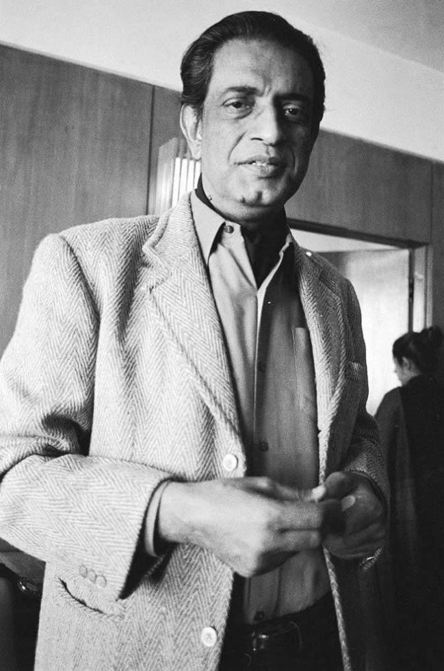
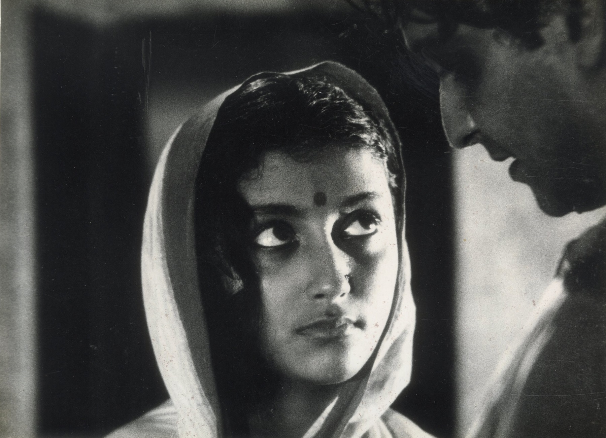

Film Career
Satyajit Ray is regarded as one of the greatest directors in world cinema. His films explored human relationships, Bengali culture, poverty, social inequality, and the changing values of Indian society. His feature-film debut, Pather Panchali (1955), earned international recognition and established his reputation as a master storyteller.

Beginnings
Satyajit Ray grew up in a family with a strong literary and artistic background. Before entering cinema, he worked as a graphic designer and illustrator. His interest in international films inspired him to pursue filmmaking. His first feature film, Pather Panchali (1955), began the acclaimed Apu Trilogy, followed by Aparajito (1956) and Apur Sansar (1959).
Famous Works

Ray directed a wide variety of films, including dramas, comedies, detective stories, literary adaptations, short films, and documentaries. His famous works include Jalsaghar, Devi, Mahanagar, Charulata, Nayak, Goopy Gyne Bagha Byne, Aranyer Din Ratri, Pratidwandi, Seemabaddha, Ashani Sanket, Sonar Kella, Jana Aranya, Shatranj Ke Khilari, Ghare-Baire, and Agantuk.
Pather Panchali (1955)
Pather Panchali portrays the struggles and everyday experiences of a poor family in rural Bengal. Through the lives of Apu and his sister Durga, Ray explores childhood, family bonds, poverty, and hope. Its realistic storytelling and beautiful cinematography brought international recognition to Indian cinema.
Aparajito (1956)
Aparajito is the second film in the Apu Trilogy. It follows Apu as he grows up, pursues education, and gradually becomes independent. The film explores the emotional relationship between Apu and his mother and won the Golden Lion at the Venice Film Festival in 1957.
Parash Pathar (1958)
Also known as The Philosopher's Stone, this fantasy comedy follows a clerk who discovers a magical stone that turns objects into gold. Ray uses humor to examine greed, ambition, and the effects of wealth.
Jalsaghar (1958)
Jalsaghar, or The Music Room, tells the story of a declining aristocrat who struggles to preserve his family's musical traditions and social status. The film explores pride, loss, and social change.
Apur Sansar (1959)
The final part of the Apu Trilogy follows Apu through marriage, fatherhood, grief, and reconciliation. It is celebrated for its emotional depth and sensitive portrayal of human relationships.
Devi (1960)
Devi examines religious superstition and patriarchal authority through the story of a young woman believed by her father-in-law to be a goddess.
Teen Kanya (1961)
This anthology, meaning Three Daughters, contains three stories inspired by Rabindranath Tagore. The films explore childhood, loneliness, affection, and human relationships.
Rabindranath Tagore (1961)
This documentary celebrates the life and artistic achievements of Rabindranath Tagore, the renowned Bengali poet, writer, composer, and Nobel laureate.
Kanchenjungha (1962)
Set in Darjeeling, this film follows an affluent family during an afternoon outing. Ray explores class, marriage, family expectations, and personal freedom.
Abhijan (1962)
Abhijan follows a taxi driver whose experiences challenge his ambitions and moral values. It explores pride, social hierarchy, and personal integrity.
Mahanagar (1963)
Mahanagar, or The Big City, portrays a middle-class woman who starts working to support her family. The film explores women's independence and changing social attitudes.
Charulata (1964)
Based on a story by Tagore, Charulata explores the emotional isolation and intellectual awakening of a woman in nineteenth-century Bengal. It is admired for its visual style and subtle performances.
Two (1964)
Two is a short film contrasting a wealthy boy playing with expensive toys and a poorer child making music. Without relying on dialogue, Ray explores childhood and economic inequality.
Kapurush - O - Mahapurush (1965)
This double feature combines The Coward, a drama about a screenwriter encountering a former lover, and The Holy Man, a comedy satirising a fraudulent spiritual leader.
Nayak (1966)
Nayak, or The Hero, follows a famous actor travelling by train. Conversations with a journalist reveal his fears, regrets, and insecurities behind his public image.
Chiriyakhana (1967)
This detective film follows Byomkesh Bakshi as he investigates a mysterious murder involving a group of people with hidden pasts.
Goopy Gyne Bagha Byne (1969)
This musical fantasy follows Goopy, a singer, and Bagha, a drummer, who receive magical powers. The film blends music, comedy, fantasy, and social satire.
Aranyer Din Ratri (1970)
Four urban men travel to a forested region and encounter people who challenge their assumptions. The film explores friendship, class, masculinity, and social behaviour.
Pratidwandi (1970)
Pratidwandi follows an educated young man struggling to find employment in Kolkata. It portrays political uncertainty, unemployment, and urban frustration.
Seemabaddha (1971)
This corporate drama follows an ambitious executive whose professional success brings difficult ethical compromises. It forms part of Ray's Calcutta Trilogy.
Sikkim (1971)
This documentary presents Sikkim's Himalayan landscapes, cultural traditions, religious practices, and everyday life.
The Inner Eye (1972)
This documentary examines the life and artistic achievements of Benode Behari Mukherjee, the visually impaired artist associated with Santiniketan.
Ashani Sanket (1973)
Set during the Bengal famine of 1943, this film portrays the devastating effects of hunger and social breakdown on a rural community.
Sonar Kella (1974)
Also known as The Golden Fortress, this detective adventure introduces Feluda in a mystery involving a young boy's memories of a previous life.
Jana Aranya (1976)
The final film in the Calcutta Trilogy follows a young man navigating the business world and facing difficult moral choices.
Bala (1976)
This short documentary celebrates Balasaraswati, the celebrated Bharatanatyam dancer, and her contribution to classical Indian dance.
Shatranj Ke Khilari (1977)
The Chess Players is a historical drama set in nineteenth-century Awadh. It examines colonial expansion through the story of two aristocrats absorbed in chess while political power shifts around them.
Joi Baba Felunath (1979)
Also known as The Elephant God, this detective adventure follows Feluda as he investigates the theft of a valuable statue in Varanasi.
Hirak Rajar Deshe (1980)
This fantasy sequel to Goopy Gyne Bagha Byne satirises dictatorship, propaganda, censorship, and authoritarian rule through music and comedy.
Pikoo (1980)
Pikoo is a short film seen through a child's perspective as he encounters the emotional tensions within his family.
Sadgati (1981)
Adapted from a story by Munshi Premchand, Sadgati exposes caste discrimination and the exploitation of a poor Dalit man.
Ghare-Baire (1984)
The Home and the World explores nationalism, personal freedom, gender, and relationships during the Swadeshi movement in Bengal.
Sukumar Ray (1987)
This documentary pays tribute to Sukumar Ray, the celebrated Bengali writer and poet, and Satyajit Ray's father.
Ganashatru (1989)
Adapted from Henrik Ibsen's play An Enemy of the People, this film follows a doctor who faces opposition after exposing a public health threat.
Shakha Prashakha (1990)
Branches of the Tree explores family conflict, corruption, generational differences, and the gap between moral ideals and everyday behaviour.
Agantuk (1991)
The Stranger, Ray's final feature film, follows a family visited by a man claiming to be a long-lost relative. Their conversations explore identity, civilisation, trust, and human values.
Style and Legacy
Satyajit Ray's films are renowned for realistic storytelling, carefully composed images, natural performances, and psychological depth. He frequently adapted literary works while giving them a distinctive cinematic identity. His subjects ranged from rural poverty and family relationships to urban alienation, political corruption, fantasy, and detective mysteries.
Ray also composed music, designed visual elements, and contributed extensively to the scripts of his films. In 1992, he received an Honorary Academy Award and India's Bharat Ratna. His body of work continues to influence filmmakers around the world, securing his legacy as one of the greatest directors in international cinema.